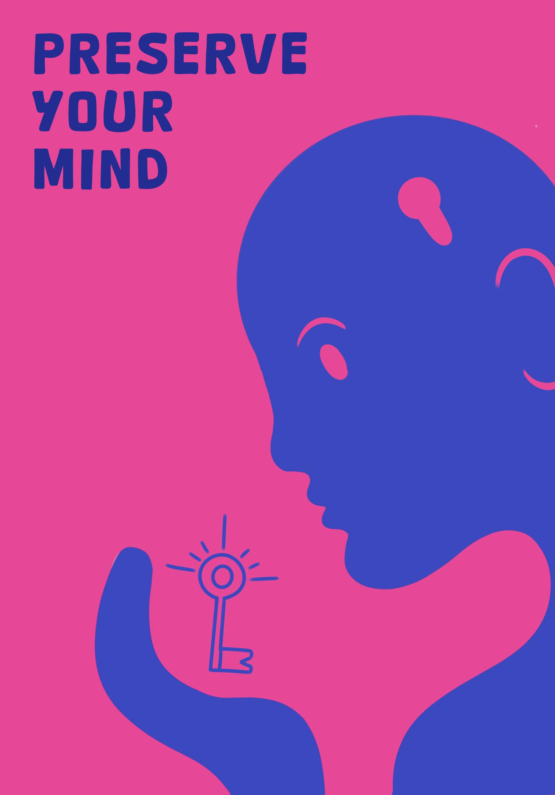

"Preserve Your Mind" Poster
"Preserve Your Mind" showcases the importance of holding onto your own thoughts, opinions, and beliefs in a world that's constantly suffocating us with outside ideas and information. I envision the mind as a cozy, protected space where our individual perspectives can flourish and help us stay true to what really matters to us.
This draws inspiration from Ralph Waldo Emerson's philosophy of self-reliance. He encourages us to trust our own instincts and inner voices instead of getting swept away by societal pressures or what everyone else thinks.
I found a lot of inspiration for this piece in my philosophy course at school. Where we had some conversations about major philosophical ideas around human connection, which really opened my eyes to how we can nurture our individuality in a world that feels so interconnected. "Preserve Your Mind" is my way of capturing that thought. It invites viewers to spark that inner dialogue that encourages self preservance
Inspiration